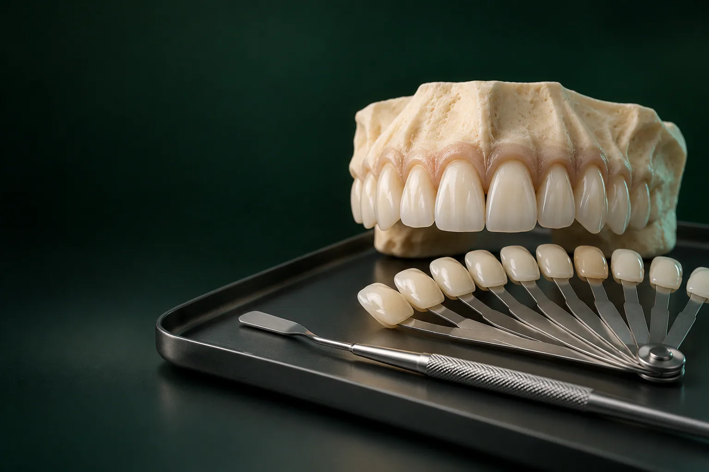

Консультация
Врач выслушивает пожелания, осматривает зуб и, если нужно, делает прицельный снимок за 500 ₽, чтобы проверить корень и скрытый кариес. Консультация бесплатная.

Художественная реставрация зубов в стоматологии «Умная Медицина» в пос. Удельная: это восстановление формы и цвета зуба светоотверждаемым композитом прямо в кресле, без коронки и с бережным отношением к здоровой эмали.
Имеются противопоказания. Необходима консультация специалиста.
Так исправляют сколы, трещины, потемневшие пломбы и небольшие щели между передними зубами, а жевательным зубам возвращают бугры и контакт с соседями. Цена композитной реставрации: от 8 550 ₽. Работают стоматологи-терапевты Читайкин Артём Сергеевич и Каштанова Екатерина Константиновна, а начать можно с бесплатной консультации: врач осмотрит зуб и скажет, подходит ли вам композит или лучше выбрать керамику.
Цена зависит от объёма работы. Восстановить уголок резца проще и дешевле, чем заново смоделировать половину жевательного зуба. На итог влияют число поверхностей, которые нужно воссоздать, наличие кариеса под старой пломбой, количество зубов в зоне улыбки и то, нужен ли снимок. Стоимость врач называет после осмотра и до начала лечения, чтобы вы заранее знали сумму.
Цены «от»: минимальные, окончательную сумму врач назовёт после осмотра. Цены актуальны на 18.10.2026. Стоимость остальных услуг: на странице цены.
уточняем у клиники
Как всё это оформить, рассказываем на странице цены, рассрочка и налоговый вычет.
Композит выручает, когда собственный зуб в целом крепкий, а исправить нужно его вид или небольшую утрату тканей. С такими задачами чаще всего приходят к терапевту:
Трещины и границы старых пломб в труднодоступных местах врач может рассмотреть под увеличением: подробнее о методе на странице лечение под микроскопом уточняем у клиники.
Если зуб разрушен больше чем наполовину, стенки истончились после лечения каналов или на зуб приходится большая жевательная нагрузка, обширная пломба может не выдержать и расколоть зуб. В таких случаях надёжнее керамическая вкладка или коронка: их изготавливает ортопед. Если под старой пломбой обнаружен кариес, сначала его лечат и только потом моделируют форму.
Живой зуб не бывает одного оттенка. У шейки он темнее и насыщеннее, в середине: светлее, а режущий край у передних зубов слегка прозрачный. Поэтому в художественной работе используют несколько композитов разной плотности и прозрачности: одни повторяют дентин, другие, эмаль, третьи, полупрозрачный край.
Оттенок врач подбирает по шкале расцветки в самом начале приёма, пока зуб влажный: пересохшая эмаль светлеет, и цвет можно определить неверно. Форму сверяют с симметричным зубом с другой стороны, с линией губ и с прикусом: восстановленный край не должен мешать смыканию зубов.
Если планируется большое изменение улыбки керамикой, ортопед может заранее показать будущую форму на восковой модели (wax-up) и на примерке из композита (mock-up), чтобы вы увидели результат до начала лечения уточняем у клиники.
Врач выслушивает пожелания, осматривает зуб и, если нужно, делает прицельный снимок за 500 ₽, чтобы проверить корень и скрытый кариес. Консультация бесплатная.
Если на зубах налёт или камень, перед работой рекомендуют профессиональную гигиену: на чистой эмали точнее подбирается цвет.
Шкалу расцветки прикладывают к зубу при хорошем освещении, оттенок выбирают вместе с вами.
При работе в глубоких тканях делают местную анестезию. Небольшой скол эмали иногда восстанавливают и без неё: решение принимает врач.
Удаляют старую пломбу и поражённые ткани, края дефекта аккуратно обрабатывают, чтобы переход от эмали к композиту был незаметным.
Влага ухудшает сцепление материала, поэтому зуб защищают на время работы уточняем у клиники.
Композит наносят тонкими слоями, каждый отверждают специальной лампой и постепенно воссоздают анатомию зуба.
Врач проверяет прикус, убирает лишнее и полирует поверхность до естественного блеска.
Сроки и цену каждого этапа врач распишет в плане лечения.
Записаться на консультациюПрямую реставрацию обычно выполняют за одно посещение. Сколько времени займёт приём в вашем случае, врач скажет на консультации уточняем у клиники.
Передние зубы видны в разговоре и в улыбке, поэтому здесь важна каждая деталь: прозрачность края, блеск, симметрия с соседним зубом. Реставрация передних зубов помогает убрать скол, закрыть небольшую щель, заменить потемневшую пломбу на видимой поверхности и выровнять длину резцов. Если зуб пострадал от удара, врач обязательно делает снимок: травма может затронуть нерв, и тогда сначала нужно лечение каналов.
У жевательных зубов на первом месте функция. Врач восстанавливает бугры, чтобы зуб правильно смыкался с зубами-антагонистами, и плотный контакт с соседями: иначе между ними начнёт застревать пища. Чаще всего такая работа идёт сразу после лечения кариеса или каналов. Если дефект большой, терапевт может предложить керамическую вкладку: она прочнее объёмной пломбы.
Если композита недостаточно, план составляют терапевт и ортопед вместе, по снимку и состоянию зуба. Все способы восстановления описаны в разделе протезирование.
Композит не светлеет при отбеливании: после процедуры свои зубы станут светлее, а пломбы и реставрации останутся прежнего цвета и будут заметны. Поэтому, если вы хотите более светлую улыбку, сначала проводят профессиональное отбеливание FLASH (от 15 000 ₽), а затем подбирают оттенок композита под новый цвет эмали. Старые реставрации в зоне улыбки после отбеливания при необходимости заменяют уточняем у клиники.
Срок службы зависит от размера и расположения реставрации, прикуса, привычек и гигиены. Чтобы результат радовал дольше:
уточняем у клиники
Художественной реставрацией в клинике занимаются два стоматолога-терапевта. Восстановить скол или заменить старые пломбы к нам приезжают и из Люберец: работу над несколькими зубами можно заранее распределить по удобным дням.
Екатерина Константиновна ведёт и ортодонтическое лечение, поэтому может оценить зубы после брекетов с двух сторон: и выравнивание, и эстетику. Другие направления лечения собраны в разделе лечение зубов, все специалисты: на странице врачи.

Терапевт, эндодонтист
Лечение кариеса и каналов, сохранение зубов
Записаться к врачу
Терапевт, ортодонт
Эстетическая реставрация и прикус
Записаться к врачуПубликуем отзывы только пациентов, которым делали реставрацию в клинике, и только с их письменного согласия.
отзыв пациента
фото или схема
Это восстановление разрушенной части зуба с повторением его естественной формы и цвета. При прямой реставрации врач наносит композит на зуб прямо на приёме, при непрямой: ортопед заказывает в лаборатории керамическую вкладку или винир. Художественной её называют потому, что врач воссоздаёт рельеф, прозрачность и оттенки живого зуба, а не просто закрывает дефект пломбой.
Если нужно убрать кариес или старую пломбу рядом с нервом, врач делает местную анестезию, и на время приёма участок теряет чувствительность. Небольшой скол эмали часто восстанавливают без укола. Если во время работы стало неприятно, скажите врачу: он остановится и при необходимости добавит обезболивание. Лечение под наркозом и седацией в клинике не проводят.
Врач подбирает оттенок по шкале расцветки, аккуратно обрабатывает края скола или удаляет старую пломбу, изолирует зуб от слюны и наносит композит слоями: от «дентинных» к «эмалевым». Каждый слой отверждают лампой, затем зубу придают форму, проверяют прикус и полируют.
Прямая: композитом в кресле за одно посещение. Непрямая: керамическими вкладками или винирами, которые изготавливают по слепку или 3D-скану. Если зуб разрушен сильно, его восстанавливают коронкой.
Прямая реставрация зубов без обточки здоровых тканей возможна, когда нужно нарастить скол или закрыть небольшую щель: композит наносят на подготовленную эмаль. Если есть кариес или старая пломба, их удаляют.
Да, и это частый запрос: после снятия брекетов становится видно, что край резца неровный или остались следы на эмали. Обычно реставрацию делают, когда зубы уже стоят ровно, а ретейнер подобран. Оценить зубы с точки зрения и ортодонтии, и эстетики может Каштанова Екатерина Константиновна.
Отбелить можно, но композит при этом не посветлеет и будет выделяться на фоне светлой эмали. Поэтому отбеливание лучше провести до реставрации или заменить заметные реставрации после него. Порядок действий врач предложит на консультации.
Композитная реставрация: от 8 550 ₽, консультация терапевта бесплатная. Точная сумма зависит от объёма дефекта и количества зубов, врач называет её до начала работы. Керамический винир E.max стоит от 34 100 ₽.
Запишитесь на консультацию: план лечения с ценой по этапам
Имеются противопоказания. Необходима консультация специалиста.
Адрес клиники: Московская обл., Раменский округ, пос. Удельная, ул. Громова, 10/2. Клиника рядом с Жуковским; по соседству Малаховка, Быково, Ильинский, Родники, Островцы, Красково и Октябрьский. Пациенты приезжают и из Люберец, Раменского и Балашихи.
На машине: из Жуковского через Быково, без выезда в Москву. Парковка: уточняем у клиники.
На МЦД-3: до станции Удельная, от неё пешком до клиники. Из Жуковского: от станции Отдых три остановки без пересадок (Ильинская, Быково, Удельная).
Если откололся передний зуб, позвоните перед выездом: администратор подберёт ближайшее время приёма.
Подробнее о клинике: на странице стоматология в Удельной.
Имеются противопоказания. Необходима консультация специалиста.
пгт Удельная, Раменский округ, рядом с Жуковским.
Ежедневно с 9:00 до 21:00
+7 495 150-36-15К нам ездят из Жуковского, Раменского, Быкова, Ильинского, Красково, Малаховки, Островцов, Люберец и Балашихи.
Перезвоним за 5 минут, подберём врача и удобное время.
Оставьте номер, администратор перезвонит и ответит на вопросы.
Подойдёт КТ, панорама, прицельный снимок или фото плана лечения из другой клиники. Врач посмотрит и ответит в течение рабочего дня. Это бесплатно.
Хирург, ортопед и терапевт осмотрят вас вместе, сделаем КТ. Консультация бесплатная, стоимость лечения врач назовёт после осмотра.
Консультацию ведут вместе
 ХирургМихаил
ХирургМихаил ОртопедЕвгенийТерапевтАртём
ОртопедЕвгенийТерапевтАртёмПервый визит бесплатно
Хирург, ортопед и терапевт посмотрят ваш случай вместе и предложат два-три варианта с ценой. Оставьте номер, администратор перезвонит и подберёт время.
Скидка 10% на лечение, если оплатить его в день консультации
Перезвоним за 5 минут, ежедневно с 9:00 до 21:00. Отправляя заявку, вы соглашаетесь на обработку персональных данных.